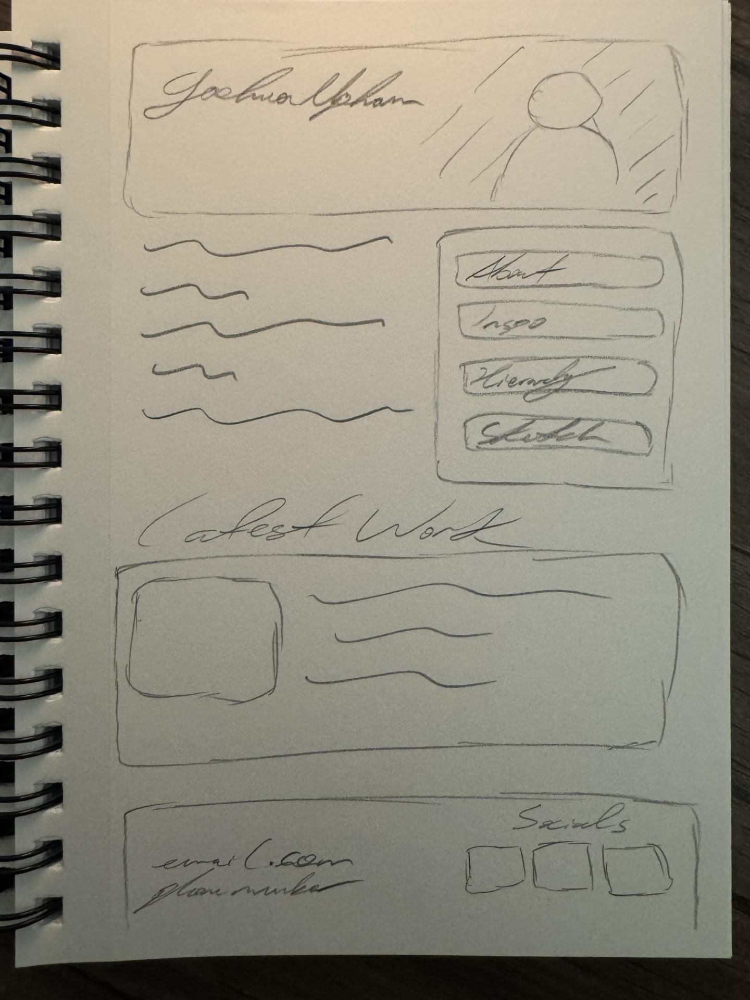

I was going pack* and forth between every folder and double-checking every name and link because the one for the sketchbook itself wasn't working. It was ten minutes later when I found that I had made the tiny typo of writing "href" as "herf."
The horrors persist.
P.S.
Roommate just noticed typo in the written reflection. (pack=back)*
The horrors persist.
P.P.S.
I just spent 30 minutes trying to get the links to connect from the other pages because I didn't realize that the ".." was literal in my notes, and just assumed it was where I put the file name.
When will the torment end?
I actually really enjoyed making my navigation system into something much closer to the style I was looking for. I wanted to go for a bubble sort of look, with calm natural feeling colors. Having the navigation look the same through every aspect of the site made it feel much more fluid and connected. I'm liking how it's beginning to feel real. It's got me thinking about creating my own site for my portfolio in the future. A lot of the actual design of the navigation came from just messing with different commands that automatically came up when I typed words like border and color, and testing out what they did. I still want the rest of the site to feel a bit more put together, and am thinking about the navigation being more of a box, that sits on the side of the screen. I put the css for the nav in the root sheet as it pertains to all pages, but left the modifications for a single page, on that page's own css.
I changed some of what my original wireframe had and didn’t add some of it as I still am unsure of how to accomplish it. The primary example of this would be trying to put the text next to the image, as I tried different versions of inline display codes, all to no avail. I altered the navigation, as I found a style that I thought to be cleaner and more appealing, which was largely influenced from the mid-century modern blog, as I really like that minimalist look and feel, and plan on incorporating more aspects in line with that premise henceforth. In terms of css and html choices, I decided to alter the look of portions of the text through class classifications so that hopefully they will be easier to alter across the site from now on. I did spend quite a while trying to fix the navigation for the css basics page, before I realized that the scroll bar on the side of the browser was what was causing the slight change in placement, and not an unseen modification within the code.
I found publishing the site to GitHub not too bad, so far, I’ve only run into the one issue with pageTwo from the first publishing. I have noticed that it can be quite slow to publish from the first push, which led to me believing that there was an error when implementing my code, that wasn’t coming up in Visual Studio Code. It turns out it was just slow, and after refreshing a few times, and re-pushing the code, the problem alleviated without any changes necessary to the code, and all my modifications showed up. I still am unsure how to modify the navigation on the box model page, but that is an error on my part, nothing to do with GitHub.
Another foe has entered the fray. Though the theory of the box structure, when it comes to coding, is quite simple, trying to put it into action has proven a tad difficult from time to time. I found that my issue was not mentally differentiating the text or link correctly from the portion to which they were within. One occurrence of this was creating flex boxes but seemingly forgetting what column and row meant, so I would end up with a navigation that filled the screen. I was also dealing with a sample of text in the biography section that was always coming across in columns, regardless of this distinction. After losing my mind for about thirty minutes, I remembered that the display option of block also exists, which helped me regain what was left of my sanity.
I suppose it must be the delirium, but class titles have resorted to potato and tomato, but they work as intended nonetheless. After obtaining a generic understanding of what's possible, I have now begun to nitpick every bit of the website, and began to notice tiny differences in pages, such as similar text being bold on one page, whilst italicized on another. I have found that it is from my early attempts at customization through html, which makes all the time digging through css akin to taking the scenic route, but at least I'm much more familiar with my code, I suppose.
I've also been testing out my site on different size screens to make sure that all aspects changed accordingly, which they didn't. This was due to old aspects of the code that I hadn't touched in a while, such as the nav on the respective pages. This meant that they were made before I had knowledge of flexboxes, which too me way longer to figure out than it should have, but I digress. The flex boxes solved all the issues, as soon as I remembered how to use them correctly. It took quite a while for me to remember justify content, which as it turns out, is extremely useful if you're perhaps trying to position the content in a nav, which I had been trying for quite a while, to no avail. All seems to end well......for now......